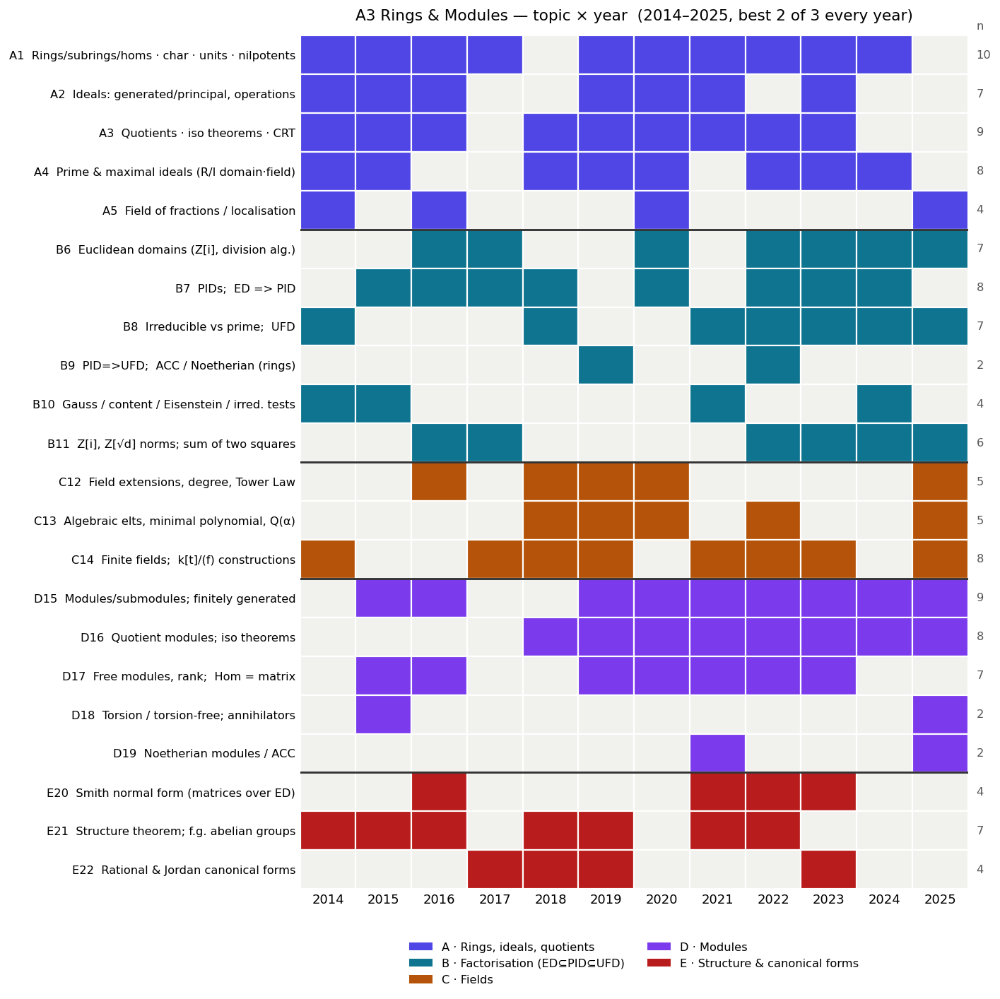

Built from all 12 papers, 2014–2025 (Oxford Part A, paper A3;
titled “Algebra 2” in 2014–15, “Rings and Modules” from 2016). Companion
files: a3_heatmap.png (topic × year grid),
a3_topic_matrix.csv (the raw matrix). Cross-checked against
the current course notes (rm.html).

Confidence: high on the format and on “a module/structure question + a factorisation question every year” (12/12 each); medium on the specific rotation calls (canonical forms returning, fields recurring).
| Feature | Every year 2014–2025 |
|---|---|
| Questions | 3, answer best 2 |
| Marks | 25 each (50 total) |
| Length | 90 minutes |
| Sections | none (free choice of any 2 of 3) |
| Title | “Algebra 2” (2014–15) → “Rings and Modules” (2016 →) |
How the three questions partition the syllabus (the recurring shape):
Because you choose any 2 of 3, you can drop one cluster — but the three rotate which sub-topics they carry, so own two clusters cold and keep a third as insurance. The two safest to own (most reliably present): B (factorisation, incl. Z[i]/Z[√d]) and D+E (modules + structure).
These are the state-and-prove / prove-this results. Ranked by frequency and recency.
| Result | Years asked to prove/state | Why it’s a lock |
|---|---|---|
| ED ⟹ PID (every ideal in a Euclidean domain is principal) | 17, 18 (via PID gcd+Bézout), 20, 24 (4×) | The single most reliable A3 bookwork. Know the “least-norm element generates” argument cold; the 2018 variant proves hcf existence + Bézout + “irreducible ⟹ maximal” from it. |
| Z[i] (and Z[ω]) is a Euclidean domain | 16, 17, 23, 25 (4×) | Asked to prove repeatedly. The rounding/division argument with N(a+bi)=a²+b². Gateway to the sum-of-two-squares question. |
| I prime ⟺ R/I domain; I maximal ⟺ R/I field (and maximal ⟹ prime) | 14, 18, 19, 20, 22, 23 (6×) | Tiny, constantly reused, opens many questions. |
| Structure theorem (statement) ⟹ classification of f.g. abelian groups | 14, 15, 16, 18 (+ applied 21) | State it correctly (invariant-factor form) and use it to count/classify groups of a given order — asked almost every early year and underpins the γ-question. |
A modules/structure question is guaranteed (12/12 years), so at least one Tier-1/Tier-2 result from clusters D/E will be needed every time.
| Result | Years | Note |
|---|---|---|
| First isomorphism theorem for modules (+ submodule correspondence) | 19, 24 | ker/im are submodules, M/ker ≅ im; the 2024 paper bundled it with the lattice correspondence and Schur’s lemma. |
| Minimal-polynomial package (m_α irreducible; F[α] ≅ F[x]/⟨m_α⟩ is a field; [F(α):F]=deg m_α) | 19, 22, 25 | The backbone of the fields question; 2025 used it to prove the algebraic numbers form a field. |
| Tower Law [L:F]=[L:K][K:F] | 20, 25 | Short, proved outright in both; pairs with the minimal-polynomial package. |
| Gauss’s lemma / content / Eisenstein’s criterion | 14, 15, 21, 24 | Content multiplicativity + Eisenstein (often via x ↦ 1+x on the cyclotomic). |
| prime ⟹ irreducible; converse in a UFD | 22, 25 | The one-line proof + the UFD converse. |
| Smith normal form (diagonalisation over a ED + uniqueness up to units) | 16, 21, 22, 23 | Both the existence algorithm and the uniqueness statement have been asked. |
| Rational/Jordan canonical form & “M_A ≅ M_B ⟺ A,B similar” | 17, 18, 19, 23 | The k[x]-module view of a linear operator; cyclic-vector ⟹ min = char poly. |
| Chinese Remainder Theorem (state & prove) | 18 (+ applied 20, 21) | Comaximal ideals; reused to split rings/groups. |
Every paper has compute parts. The recurring computation types (drill the toolkit, not specific answers):
| Computation | Years | Typical task |
|---|---|---|
| Classify / count f.g. abelian groups of order n (invariant-factor ⇄ primary) | 14, 16, 18 | Z/60 ⊕ Z/21 canonical form; #groups of order 675 / 216 |
| Z[i] / Z[√d] arithmetic (units via N=1, irreducibility, non-unique factorisation, p = u²+v²) | 16, 17, 22, 23, 24, 25 | units of Z[√−d]; 4 = 2·2 = (1+√−3)(1−√−3); p ≡ 1 mod 4 ⟹ sum of two squares |
| Polynomial irreducibility / factorisation in Q[x], Z[x] | 14, 21, 24 | Eisenstein, reduction mod p, rational-root; 6x⁴+5x²+1; cyclotomic |
| Smith normal form / adapted basis of a submodule | 16 (+ 21, 22, 23) | basis of N ⊆ Z³; invariant factors of a presented group |
| Rational canonical form of a given matrix / k[x]-module decomposition | 17, 19, 23 | RCF of a 4×4; decompose Fⁿ as F[x]/⟨…⟩ ⊕ … ; min/char poly |
| Field degree [Q(α):Q] / structure of Q(α) | 16, 18, 19, 25 | degrees, Q[√a]=Q[√b]?, Q[A] ≅ Q[√2] |
Prediction: at least one Z[i]/Z[√d] computation (momentum: all of 2022–25) and at least one module/structure computation. Keep the sum-of-two-squares via Z[i] argument and the Smith-normal-form algorithm ready to reproduce end-to-end.
Caveat: predictions are pattern-extrapolation from 12 papers plus the current notes. The format call is as safe as it gets (no change in 12 years); the topic-rotation calls (canonical forms returning, fields recurring) are softer single-to-few-year signals — sanity-check against your problem sheets and any lecturer guidance.